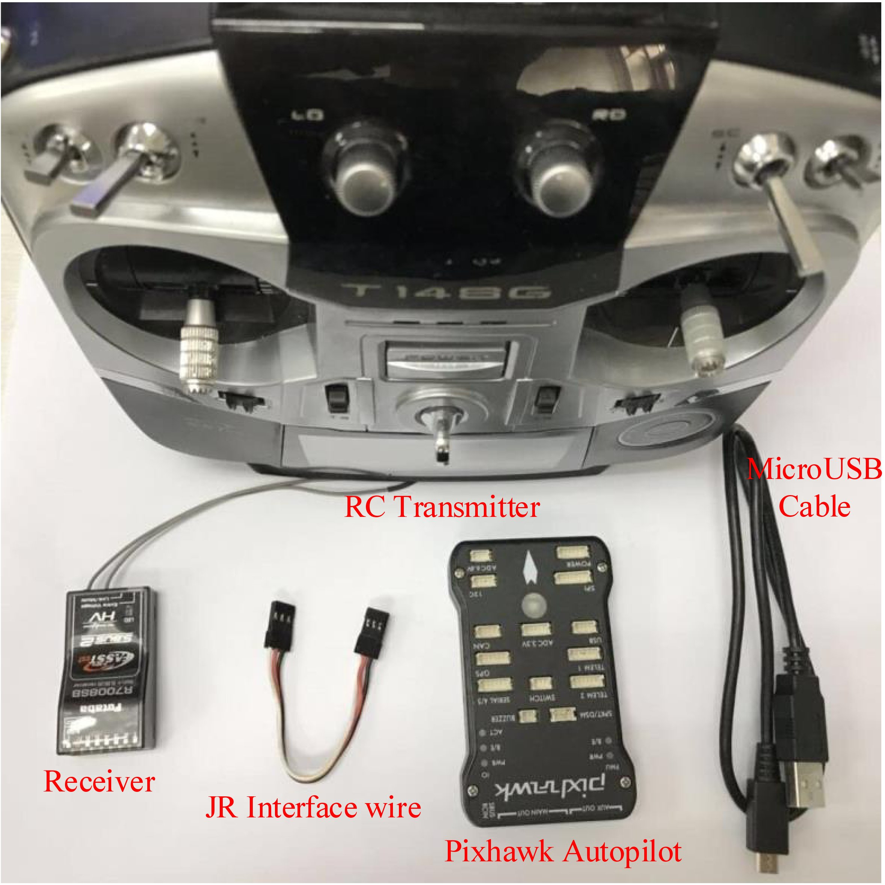
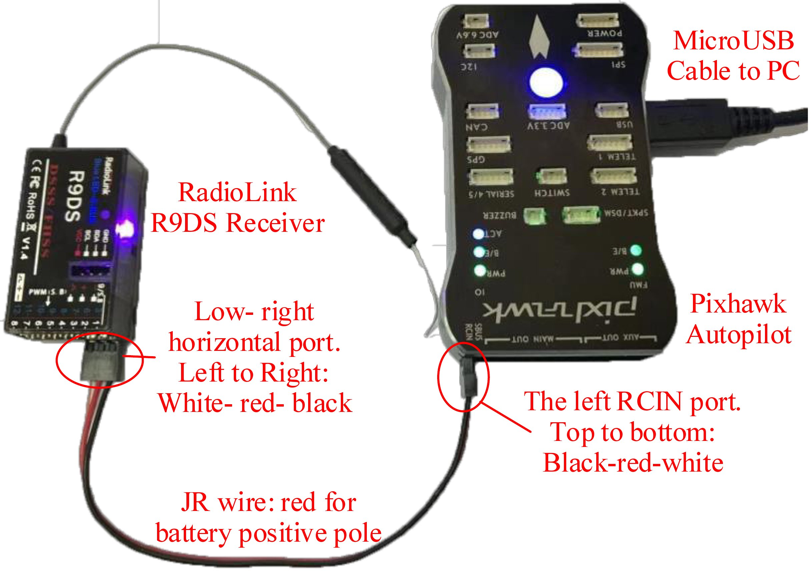
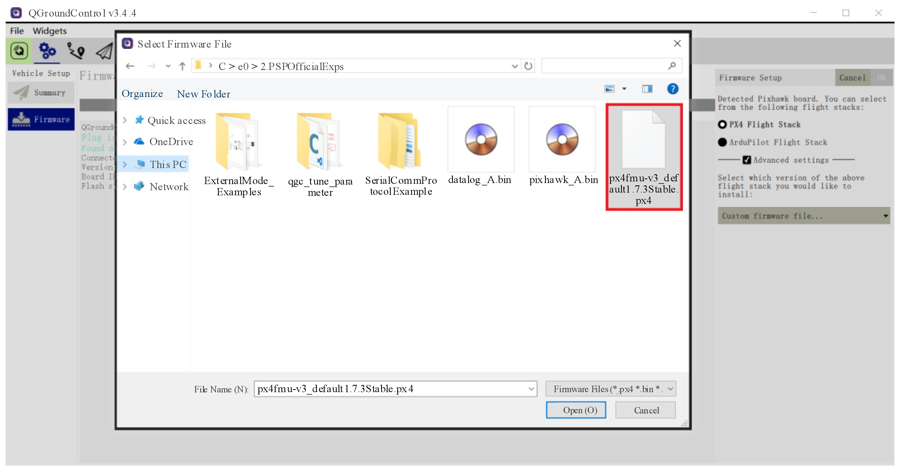

4. Pixhawk Hardware System¶
4.1. Hardware System Composition and Connection¶
As shown in Fig. 3.41, the hardware components required by this book include an RC transmitter, an RC receiver, a JR signal cable (connecting the Pixhawk autopilot and the RC receiver), a Pixhawk autopilot (Pixhawk 1 is recommended for studying, and higher hardware versions are recommended for outdoor flight tests), and a MicroUSB cable (connecting the computer and the Pixhawk hardware for power supply and data transmission). The connection relationships among the above components are presented in Fig. 3.42.
Fig. 3.41 Pixhawk autopilot, RC transmitter, and RC receiver
Fig. 3.42 Connection between Pixhawk hardware and RadioLink receiver
4.2. Basic Operation Method for RC Transmitter¶
The RC transmitter used in this book should be set to “Mode 1”. As illustrated in Fig. 3.43, the throttle and yaw channels are controlled by the left stick on the RC transmitter, whereas the roll and pitch channels are controlled by the right stick. The roll, pitch, throttle, and yaw channels correspond to the CH1 to CH4 of the RC receiver respectively; the upper-left three-position switch corresponds to CH5 for triggering the autopilot to switch flight modes; the upper-right three-position switch corresponds to CH6 for triggering the autopilot to switch flight modes or enable other functions.
Fig. 3.43 RC transmitter channels
The following relationships should be remembered when processing the PWM input signals from the RC system for designing a controller.
- The throttle stick (CH3) moves from the bottom position to the top position, and the corresponding PWM value of CH3 received by Pixhawk changes from 1100 to 1900;
- The roll stick (CH1) and the yaw stick (CH4) move from the left position to the right position, and the corresponding PWM values change from 1100 to 1900;
- The pitch stick (CH2) moves from the bottom position to the top position, and the corresponding PWM value changes from 1900 to 1100;
- The upper-left switch (CH5) and the upper-right switch (CH6) move from the top position (the farthest position from the user), middle position, and bottom position (the closest position from the user), and the corresponding PWM values change from 1100, 1500, to 1900.
4.3. Method for Uploading Firmware Through QGC¶
Find the QGroundControl icon on the desktop and open the QGC software , the software UI is presented in Fig. 3.44.
Fig. 3.44 QGC firmware upload interface
Then, the following procedure presents the way to upload a PX4 firmware file to the Pixhawk hardware through QGC.
(1). Click the “Settings” button (the gear icon on the toolbar in Fig. 3.44) to enter the QGC setting page.
(2). Click the “Firmware” tab, and then connect the Pixhawk hardware with a USB cable. The QGC will automatically detect the Pixhawk autopilot and pop up the right tap, as shown in Fig. 3.44.
(3). Click the “Advanced settings” checkbox.
(4). Click on the “Standard Version (stable)” tab.
(5). Select the “Custom firmware file ..” option in the pop-up menu.
(6). Click the “OK” button.
(7). As shown in Fig. 3.45, select file “e02.PSPOfficialExpspx4fmu-v3_default1.7.3Stable.px4” in the pop-up file selection window, and click the “Open” button. Then, the QGC will upload and burn the firmware into the Pixhawk hardware.
Fig. 3.45 QGC custom firmware selection page
4.4. Pixhawk Setting for HIL Simulation Mode¶
Open the QGC software, and connect the Pixhawk autopilot with a USB cable. Then, QGC will automatically recognize the Pixhawk autopilot and create a connection for parameter setting and data transmission. Fig. 3.46 presents the UI of QGC after connecting with the Pixhawk autopilot.
Fig. 3.46 Pixhawk autopilot connected to QGC
Click the “Airframe” tab (the third item on the left side in Fig. 3.46) on the QGC setting page to confirm that the “HIL Quadcopter X” airframe mode (see Fig. 3.47) is selected by default.
Fig. 3.47 QGC Airframe setting page
This setting is critical for subsequent HIL simulation. Otherwise, a manual setup will be required. The airframe setting method is presented below.
(1). Select the “HIL Quadcopter X” airframe icon in Fig. 3.47.
(2). Click the “Apply and Restart” button in the upper right corner of the UI. Then, the autopilot will restart to make the new airframe available.
(3). Wait for a few seconds; QGC will connect to the autopilot again and will check whether the setting in Fig. 3.47 is correctly established.
4.5. RC Transmitter Configuration and Calibration¶
According to Fig. 3.42, connect the Pixhawk autopilot and the RC receiver. Then, connect the Pixhawk autopilot with the computer. Next, turn on the RC transmitter, and open QGC. After QGC connects with the Pixhawk autopilot successfully with the UI presented in Fig. 3.46, click the “Radio” item on the QGC setting page (the fourth item on the left side in Fig. 3.46) to check the connection condition with the RC transmitter.
Move the sticks of the RC transmitter and observe the trend of channels 1–6 on the right area in Fig. 3.48 (this area only appears when the RC transmitter is successfully connected). Check whether it meets the needs of this experiment. First, according to the stick and channel definition shown in Fig. 3.43, sequentially perform the following operations to check whether the setting of the RC transmitter satisfies the experimental requirements of this book.
(1). Move the throttle stick (CH3 in Fig. 3.43) from bottom to top. The third slider on the bottom-right region in Fig. 3.48 should move from left to right (the PWM value changes from 1100 to 1900).
(2). Move the roll stick (CH1) and the yaw stick (CH4) from left to right. The first and the fourth sliders in Fig. 3.48 should move from left to right (the PWM values change from 1100 to 1900).
(3). Move the pitch stick (CH2) from bottom to top. The second slider in Fig. 3.48 should move from right to left (the PWM values change from 1900 to 1100).
(4). Move the upper-left switch (CH5) and the upper-right switch (CH6) from the top position (the farthest position from the user) to the bottom position (the closest position from the user). The fifth and the sixth sliders in Fig. 3.48 should move from left to right (the PWM values change from 1100 to 1900).
If the above rules are not satisfied, it means that the RC transmitter is not set correctly, so the RC transmitter should be re-configured by the methods presented in Sect. 2.3.1. Besides, if QGC prompts a warning message saying that the RC transmitter is not calibrated, click the “Calibrate” button in the middle in Fig. 3.48 and complete the RC calibration by moving the sticks according to the instructions on QGC.
Fig. 3.48 QGC RC transmitter setting and calibration page
4.6. Flight Mode Settings¶
After the RC transmitter is successfully calibrated, enter the “Flight Modes” setting page (see Fig. 3.49) and select “Mode Channel” as the previously tested CH6 channel. Since the CH6 channel is a three-position switch, the top position (the farthest position from the user), middle position, and bottom position (the closest position from the user) of the switch correspond to “Flight Mode 1, 4, 6” in Fig. 3.49, respectively. Also, according to Fig. 3.49, associate these three modes to “Stabilized” (the stabilized mode, only including attitude control), “Altitude” (the altitude hold mode, including attitude and altitude control), and “Position” (the loiter mode, including attitude and position control).
Fig. 3.49 Flight mode setting page in QGC